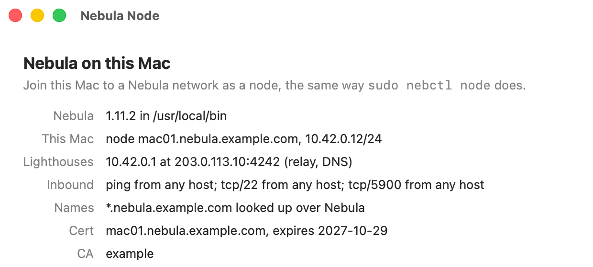

From one server to a whole network
Only the lighthouse needs a public address. Every other machine checks in with it once, then talks to the others directly.
-
On a server with a public address
Light the lighthouse
nebctl installs Nebula, creates the certificate authority, signs the lighthouse's own cert and starts the service.
$ sudo nebctl lighthouse Nebula network: 10.42.0.0/22 Domain for Nebula host names [nebula.example.com]: Answer DNS for *.nebula.example.com? [Y/n]:
-
On the lighthouse
Sign a cert for a machine
It prints a bundle, one block of text with the machine's cert and key, the lighthouses and the domain.
$ sudo nebctl ca sign Host name for the cert: mac01 -----BEGIN NEBCTL BUNDLE----- H4sIAAAAAAAC/+RXW4+iyhZ+5r8w7zuDY...
-
On the new machine
Paste it in
With Nebula Node on a Mac, or one command on Linux. The machine joins, gets its name and reconnects at every boot.
$ sudo nebctl node Installed the cert for mac01.nebula.example.com Try it: ping 10.42.0.1

Nebula Node, the Mac app
No Terminal needed on the Mac. Paste the bundle, check the lighthouses and what other machines may reach, and it does the rest. macOS asks for your password when it changes anything.
- Your key, your Mac
- It can make the key on the Mac and send only a request to be signed.
- At a glance
- The cert's expiry and whether Nebula is running, with Start, Stop and Restart.
The parts that are easy to get wrong, done right
Names, not numbers
ssh fe01.nebula.example.com, from any machine on the network.
Keys that never travel
A machine can make its own key; the lighthouse signs only the public half.
Checked installs
Official Nebula releases, checked against their checksums. One command to update.
A lighthouse check-up
nebctl audit reviews the server facing the internet, with the fix for each finding.
Renewals that keep addresses
Sign the same name again to renew. A warning comes 30 days ahead.
Tested configs
Every config passes nebula -test before it's used.
Download
Always the latest release, each file checkable against SHA256SUMS.
Nebula Node for Mac
Apple silicon and Intel, macOS 14 or later.
DownloadNot notarized yet: run xattr -cr "/Applications/Nebula Node.app" once after installing.
Command-line tool
curl -LO https://github.com/davewat/nebctl/releases/latest/download/nebctl-linux-amd64 curl -LO https://github.com/davewat/nebctl/releases/latest/download/SHA256SUMS sha256sum -c --ignore-missing SHA256SUMS sudo install -m 0755 nebctl-linux-amd64 /usr/local/bin/nebctl